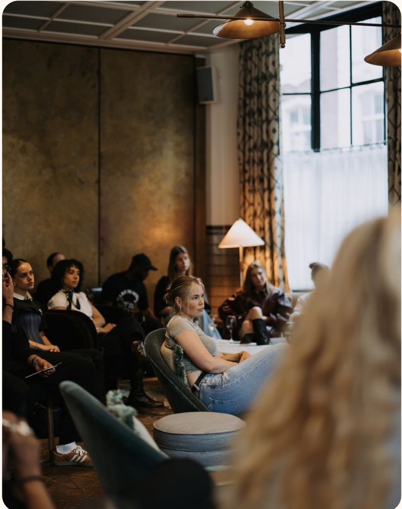
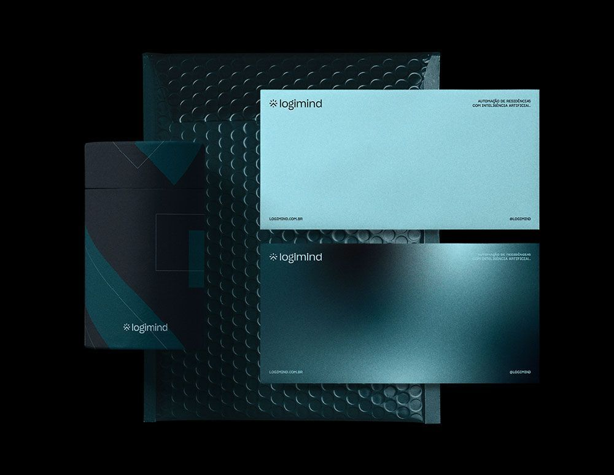

Связи
Точки, линии, пересечения, узлы, сеть, соединение, диалог.
Dental Community — сообщество стоматологов и ассистентов, в котором развиваются вместе.
От смысла к визуальному языку ↓

Комьюнити — это среда, в которой специалисты обмениваются опытом, поддерживают друг друга и развиваются вместе.
Для Dental Community слово «комьюнити» раскрывается через объединение, обмен знаниями, профессиональный рост и чувство принадлежности к чему-то большему. Объединять не только людей, но и знания, практику и профессиональные возможности.
От общего смысла — к форме, графике и визуальному языку.
Точки, линии, пересечения, узлы, сеть, соединение, диалог.
Круг, кольцо, группа, принадлежность, общая цель.
Модули, пазл, переплетение, взаимодополнение, совместная работа.
Книга, конспект, заметки, структура, библиотека знаний, методология.
Исходная карта: примеры связей, объединения, взаимодействия и образования.
Нажмите на карту, чтобы открыть её целиком.